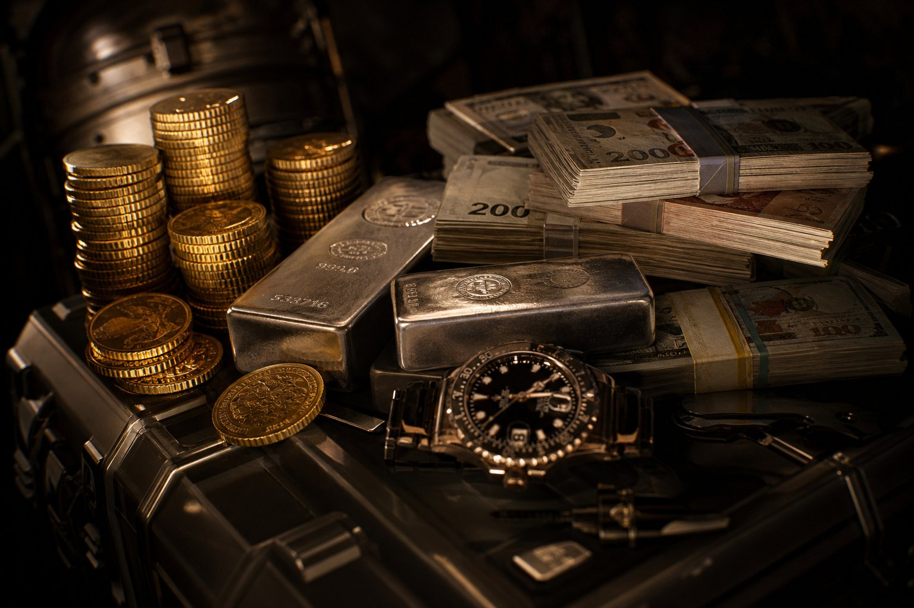

Le rendement réel de chaque source de Koen
Le « Koen par minute » est le seul indicateur qui compare correctement deux sources de revenu qui n'ont ni le même risque, ni la même durée. Un loot de 300 000 Koen arraché en deux minutes vaut mieux qu'un loot de 500 000 Koen arraché en dix minutes, et surtout il vaut mieux qu'un loot de 900 000 Koen qui a coûté un casque à 400 000.
| Source | Rendement type | Risque | Ce qui la plafonne |
|---|---|---|---|
| Extraction de loot | Variable, de 50 000 à plus de 900 000 K par raid réussi | Élevé : tout le kit peut être perdu | La taille du sac et la valeur d'équipement max |
| Missions de trading | Stable, de 100 000 à 500 000 K par mission selon le rang | Faible : aucune perte d'équipement | Le nombre de missions par jour et le rang atteint |
| Vente sur le marché | Variable, dépend entièrement de l'offre et de la demande | Faible à moyen : le prix peut s'effondrer | La liquidité disponible et le prix affiché |
| Field Merchant | Faible en direct, mais accès à la valeur marchande exclusive | Faible : aucun coût d'équipement | Les stocks du marchand et la rotation |
| Clés | Rendement différé, mais le meilleur ratio sur la durée | Faible : une clé ne se perd pas au premier raid | La durabilité de la clé et le prix d'achat |
Le piège du loot brut. Comparer deux sources au montant total est une erreur de méthode : un raid à 900 000 K de loot qui se termine par une mort en pleine rue rapporte zéro, contre une mission de trading à 100 000 K qui rapporte cent pour cent. Le calcul honnête est toujours valeur espérée : loot moyen multiplié par la probabilité de sortir vivant.
1. Les sources de Koen (par ordre d'efficacité)
| Source | Risque | Rendement |
|---|---|---|
| Containers haute valeur (registres, coffres, manteaux) | Moyen | Excellent — 20–100 000 K / raid |
| Zombie Endless (PvE, Airport) | Faible | Bon — Koen et reds, aucun opérateur adverse ne peut vous tuer |
| Field Merchants en raid (S7) | Faible | Libère de la place et construit la faveur qui débloque l'intel |
| Vente Market avec réputation contacts | Nul | Bon — la commission baisse avec le rep |
| Barter flips (Contacts) | Faible | Bon — 10–30 % de marge par trade |
| Missions & dailies | Nul | Base solide — jamais à sauter |
2. Field Merchants : la nouveauté S7 à exploiter
Les Field Merchants apparaissent aléatoirement dans les raids. Leur spécificité S7 :
- Un marchand par raid, interactif à T+5 min : vendre votre surplus libère des cases et fait monter le volume de transactions, condition de l'intel — file directement au conteneur sécurisé.
- Un trading régulier avec eux débloque les Battlefield Intel : des caches haute valeur marquées sur votre carte.
- Stratégie : looter léger → vendre vite → repartir. Idéal pour les joueurs rat kit rentables.
La règle du seuil : votre kit doit être plus petit que votre loot espéré
La phrase la plus utile du jeu, et la plus répétée par les joueurs qui survivent à une saison : n'entrez jamais avec un kit plus cher que ce que vous comptez sortir du raid. Et pas « à peu près » : sensiblement en dessous.
La version outillée de cette règle est arithmétique, et elle tient en une ligne :
| Étape | Calcul | Ce que ça vous donne |
|---|---|---|
| 1. Loot espéré | ce que vous comptez réellement ramener | estimation pessimiste, jamais optimiste |
| 2. Multiplier par votre taux d'extraction | loot espéré × 0,40 si vous extrayez 40 % du temps | la vraie recette espérée |
| 3. Plafonner le kit | recette espérée − marge de sécurité | le budget maximum de votre prochain raid |
Concrètement : si vous estimez sortir 600 000 K d'un raid et que votre taux d'extraction est de 40 %, votre recette espérée est de 240 000 K. Votre kit doit donc coûter nettement moins que ça — munitions et consommables compris. Entrer avec 600 000 K de kit pour viser 600 000 K de loot, c'est un raid déjà perdu d'avance : il suffit d'un seul raid raté pour l'emporter.
Une variante encore plus prudente circule sur les Reddit economics : ne jamais engager plus de 1 % de votre patrimoine total dans un raid. Avec 20 millions de liquidités, cela fait 200 000 K de kit maximum ; avec 10 millions, 100 000 K. Ce plafond est brutal mais il protège : c'est le seul qui rende l'économie stable même quand le taux d'extraction s'effondre.
Sources : fils Reddit « Koen » et « how are you all making your koen efficiently », discussions sur le taux d'extraction et le seuil de rentabilité — Communautaire. Le plafond officiel de 900 000 K en Lockdown reste la seule règle Officielle applicable.
3. Les règles d'or de l'économie
- Jamais plus de 20–30 % de bankroll par kit. 500 000 K en stash = kit ≤ 100–150 000 K.
- La munition avant le gun, le casque avant l'orgueil.
- Vendre tout ce que vous n'utilisez pas — les fusils poussiéreux sont du cash immobilisé.
- Déshabiller avant de vendre : magasin, poignée, viseur = ce sont des cases Market supplémentaires.
- Bundles gratuits d'abord : n'achetez jamais du gear que le jeu vous offre en événements.
- Le ratio 3x : votre loot extrait doit valoir ~3× votre kit. En dessous, changez de route.
Erreur d'afficionados
« Je cours T5 avec un kit à 1,5M, 50 % de survie » = −10M tous les 10 raids. « Je cours T4 à 0,5M, 40 % de survie » = +10M. Les maths battent le style.
L'arbitrage Field Merchant contre le marché
Le Field Merchant est le mécanisme de Saison 7 le plus rentable pour qui sait l'utiliser, parce qu'il crée un écart de prix entre deux circuits qui n'existent pas dans le marché classique.
- Identifier l'écart. Un objet vendu dear au Field Merchant mais accessible à bas prix sur le marché classique constitue un achat à revendre. L'écart se mesure en Koen par unité, pas en pourcentage.
- Vérifier la rotation. Les marchands de terrain tournent : un arbitrage n'est valable que tant que le stock est disponible.
- Comparer avec l'achat direct. Acheter l'objet au Field Merchant et le revendre sur le marché n'est un gain que si le prix d'achat est réellement inférieur au prix de vente constaté.
- Ne pas confondre flux et stock. Les objets de mission (Intel, Mystery Cargo, Chaotic Matter) se vendent immédiatement et rapportent plus en capital circulant ; les objets de stock demandent de la place en coffre et rapportent plus en capital immobilisé.
La règle des 20 %. Un arbitrage n'est intéressant que s'il dégage au moins 20 % de marge sur le prix d'achat. En dessous, vous payez la volatilité du marché pour un gain que le temps de dedication ne justifie pas. Et sur les objets de forte demande, la marge s'effondre vite parce que tout le monde achète en même temps.
Les deux enveloppes de raid à budget serré
Quand la réserve est basse, la question n'est pas « quel kit optimal » mais « quel kit qui ne peut pas couter plus qu'il ne rapporte ». Deux enveloppes de référence circulent dans la communauté, et leur logique vaut au-delà du chiffre.
| Enveloppe | Budget | Contenu | Objectif |
|---|---|---|---|
| Le rat | Moins de 20 000 K | Pistolet, gilet léger, petit sac, bandages | Zéro risque : on évite tout combat, on fouille ce qui est tranquille et on sort |
| Le bête de somme | 30 000 à 50 000 K | Un cran au-dessus, toujours sans armure lourde | On engage quand on a l'avantage : hauteur, angle ou surprise |
La démonstration chiffrée est ce qui rend l'idée convaincante. Sur dix raids, un joueur qui engage des kits à 150 000 K avec 30 % de chances de survie dépense 1 500 000 K et rapporte environ 600 000 K : il perd 900 000. Un joueur qui engage des kits à 30 000 K avec 40 % de chances de survie dépense 300 000 K et rapporte environ 320 000 K : il gagne 20 000. Le ratio de survie plus faible ne compense pas l'écart de coût.
La règle du tiers est la version prudente de ce raisonnement : ne jamais engager plus de 30 % de votre réserve disponible sur un seul raid. La règle des 20 %, plus stricte, s'applique au kit complet — arme, armure, munitions et soins ensemble — et c'est celle qui tient sur la durée.
La boucle sans raid : la revente au marchand de terrain
Il existe une source de Koen qui ne demande aucun raid et qui est régulièrement sous-estimée : la revente pure. Le principe est simple — acheter chez le marchand de terrain ce qui est sous son prix de marché, le revendre au marché ou l'utiliser au raid suivant.
- Les ventes à durée limitée du marchand changent et se réapprovisionnent. Une rotation de trois achats par jour sur des articles en promotion suffit à dégager un profit régulier, sans risquer un seul Koen d'équipement.
- Le seuil de rentabilité du marchand est bas : sur un article acheté 10 000 K sous le prix du marché, la marge est déjà nette. Il n'est pas question de faire un pari fou sur un seul achat.
- Les clés font exception : une clé d'or achetée en promotion et revendue peut représenter à elle seule plusieurs centaines de milliers de Koen de profit.
- Les accessoires se vendent en lots sur le marché : une grenade, un booster ou un consommable se négocie au prix du lot, pas à l'unité. Il faut comparer en volume.
Le corollaire, lui aussi très cité : videz votre stockage. Un article qui dort dans votre inventaire ne rapporte rien et occupe un emplacement que vous privédez. Vendre ce dont vous n'avez pas besoin avant le prochain raid est un geste à rendement nul qui libère de la place — et votre place vaut de l'argent quand le sac est plein.
Sources : fils Reddit sur le merchandising et les « limited time deals » du marchand — Communautaire. Les prix et la disponibilité des articles varient à chaque rotation : vérifiez le marchand dans votre jeu avant de convertir un capital en stock.
4. Le plan en 4 phases (0 → 10M)
| Phase | Stash | Focus |
|---|---|---|
| 1. Survie | 0–150 000 K | Rat kits, Farm Ouest, dailies, zéro risque |
| 2. Accumulation | 150 000–2 M | Zombie Endless, barter flips, ventes Market groupées |
| 3. Expansion | 2 M–10 M | Lockdown rentable, caps T5, kits adaptés aux maps |
| 4. Forbidden | 10 M+ | Endgame : T6 kits, red items, opportunités de saison |
Le seuil communautaire pour « jouer librement » tourne autour de 10M de stash : en dessous, chaque kit est une décision ; au-dessus, vous êtes maître de votre Kamona.
5. Économie de saison : ce qui reset, ce qui reste
- Reset : Season Rank, missions saisonnières, Battle Pass, Zombie Research (partiellement), stores de la saison.
- Conservé : Koen, stash, niveaux de compte, équipement, réputations contacts.
- Un wipe de saison n'existe pas en ABI — dépensez vos récompenses de saison AVANT la fin (points de rang = cosmétiques/loot qui périment).
- Profitez du Market early-season : les premiers jours, les prix des red items et des kits demandés grimpent. Vendez agressivement la semaine 1.
6. Checklist hebdomadaire
- □ Vider le Market au max (ventes groupées pour économiser les slots)
- □ Missions contacts + dailies (rep = commissions plus basses)
- □ 3 runs Zombie Endless « found money »
- □ Vendre les fusils en double, déshabillés
- □ Vérifier les barter flips profitables (10 min d'étude de prix)
- □ Écouler les Battle Pass components avant reset
Prochaine étape
L'argent c'est bien, l'autonomie c'est mieux : découvrez le Craft & Workbench S7 — la refonte majeure qui fait de votre atelier une machine à red items.